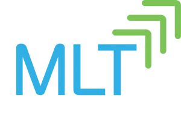

Mentorship Programs for Girls of Color in Computer Science and Engineering
Explore mentorship programs tailored to girls and students of color in technology. These programs provide guidance, support, and networking opportunities to help you succeed in your journey in computer science and engineering.
-
Girls Who Code

Girls Who Code is a nonprofit organization dedicated to closing the gender gap in technology by equipping girls with computer science skills and encouraging their pursuit of tech careers. Their mentorship program provides valuable guidance and support to girls interested in technology, helping them explore career paths, develop technical skills, and build confidence in a supportive community. To apply for the Girls Who Code mentorship program, visit their website.
-
Women In Tech

Women in Tech offers a mentorship program designed to support women in their journey as leaders in the tech industry. The program focuses on developing career-specific skills and empowering women to build confidence, communicate effectively, and pursue opportunities. Participants gain valuable mentorship skills applicable to everyday life, fostering improvements in leadership, communication, and interpersonal interactions.
-
MLT - Management Leadrship for Tomorrow
Management Leadership for Tomorrow (MLT) is a nonprofit organization committed to empowering underrepresented minorities in their professional growth and advancement. Through coaching, mentorship, and skill-building programs, MLT supports individuals in achieving their career goals and unlocking their full potential. The mentorship program offered by MLT provides invaluable guidance and support to participants as they navigate their career paths and strive for success in their chosen fields. To apply, visit their website.